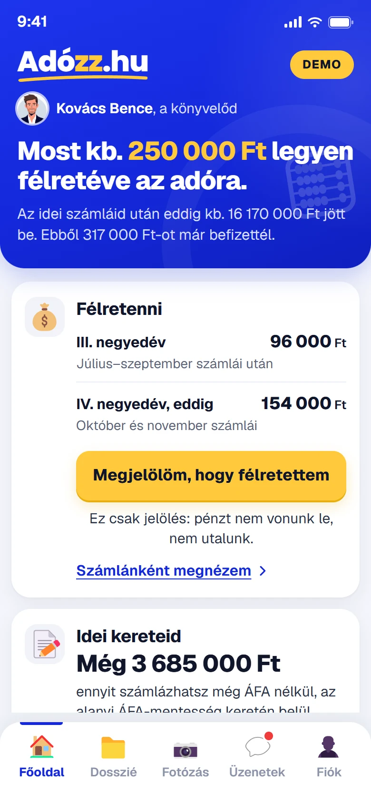
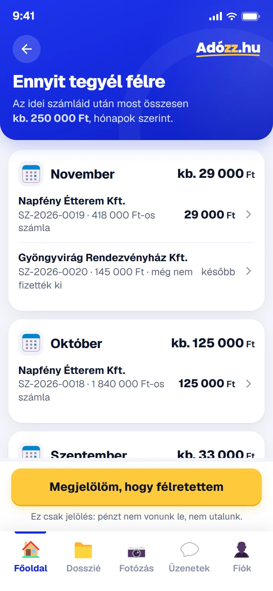

Online könyvelés egyéni vállalkozóknak
Saját könyvelő átalányadózóknak és katásoknak.
Valódi, nyilvántartásba vett könyvelő intézi a bevallásaidat és a NAV-os ügyeidet. Az appban pedig mindig látod, mennyit tegyél félre adóra, és mikor mit kell befizetned.
- A regisztrációhoz nem kell kártya
- Kártyával vagy átutalással fizethetsz
- Nincs hűségidő


Valódi könyvelő
Nyilvántartásba vett könyvelő dolgozik neked, név szerint.
NAV-meghatalmazással
Az Ügyfélkapu+- vagy DÁP-belépésedet és a jelszavadat soha nem kérjük el.
Európai szerveren
Az irataidat titkosítva tároljuk.
Magyar cég
Somosi Kft. · Adószám: 32769678-2-43 · Cégadatok
Kinek szól
Egy célcsoport, egy csomag.
Csak alanyi ÁFA-mentes egyéni vállalkozókkal dolgozunk, akik átalányadóval vagy katával adóznak. Ezért tudunk egyetlen, előre kiírt áron dolgozni.
Neked szól, ha
- átalányadózó vagy katás egyéni vállalkozó vagy,
- alanyi ÁFA-mentes vagy,
- alkalmazottad vagy alkalmi munkásod is lehet: a bérszámfejtést felárért vállaljuk,
- vagy most indítod a vállalkozásodat. Ebben is segítünk.
Most nem neked szól, ha
- tételes költségelszámolással (vállalkozói SZJA-val) adózol,
- ÁFA-körbe tartozol,
- Kft.-d vagy Bt.-d van,
Ha év közben változik a helyzeted, szólunk, és megbeszéljük, hogyan tovább.
Hogyan működik
Négy lépés, és a könyvelésed rendben van.
-
1
Regisztrálsz
Megadod az e-mail-címedet, és válaszolsz pár kérdésre a vállalkozásodról. Kártya ehhez nem kell.
-
2
Szerződés, meghatalmazás
Elfogadod a szerződést, és a NAV-nál meghatalmazást adsz a könyvelődnek. Ha kéred, ő küldi be, te csak jóváhagyod.
-
3
Visszahívás, ha kéred
A csapatunk 24–48 órán belül visszahív, munkanapokon 9 és 17 óra között. Utána fizetsz, kártyával vagy átutalással.
-
4
Indul a könyvelés
A könyvelőd bekapcsolja a könyvelést. A számláid maguktól bejönnek, te pedig az appban látod, mennyit tegyél félre.
Mit kapsz
Mindig tudod, hol tartasz az adóval.
Az app megmutatja, mennyit tegyél félre és mikor mit fizess. A számolást és a bevallást a könyvelőd végzi.
Félretenni
Minden számla után látod, mennyit tegyél félre.
Az app a kiállított számláidból kiszámolja, mennyi adóra és járulékra számíts, hónapokra bontva. A befizetendő összeget negyedévente a könyvelőd hagyja jóvá.
Pénzt nem vonunk le, és nem utalunk helyetted. Csak megmutatjuk.

Határidők
Tudod, mit, mikorra és melyik számlára utalj.
Az SZJA-előleget, a TB-járulékot és a szochót, katásként a havi katát tételesen látod: összeg, NAV-számlaszám, közlemény. Egy koppintással átmásolod a bankodba, és határidő előtt emlékeztetünk.
Az adót te utalod el, így a pénzed végig nálad marad.

Könyvelő
A könyvelőd egy üzenetnyire van.
Kérdezz tőle az appban, kérj jövedelemigazolást vagy nullás igazolást egy gombnyomással, és ha elakadsz, kérj visszahívást.
A NAV leveleit is ő értelmezi és intézi, a meghatalmazásod alapján.

Számlák maguktól
A kiállított számláid a NAV Online Számla rendszeréből jönnek. Nem kell begépelned őket.
Fotózás és feltöltés
Amit a könyvelőd kér, lefotózod vagy feltöltöd PDF-ben.
Keretek
Látod, mennyit számlázhatsz még ÁFA nélkül. Katásként a kata-keretedet is, és szólunk, ha cégnek számlázol.
Telefonon és gépen
Ugyanazt látod mindkettőn, a belépésed ugyanaz.
[NÉV]
[KÉPESÍTÉS]
Nyilvántartási szám: [nyilvántartási szám]
„[Egy mondat a könyvelőtől, a saját szavaival.]”
A könyvelőd
Valódi könyvelő dolgozik neked.
A könyvelésedet nyilvántartásba vett könyvelő végzi. A nevét és a nyilvántartási számát a szerződésedben és az appban is látod. Érte úgy felelünk, mintha magunk dolgoznánk.
Amit a könyvelőd csinál
- Kiszámolja és beadja a negyedéves SZJA-előleget, TB-járulékot és szochót. Katásként figyeli a havi katát és a keretedet.
- Vezeti a bevételi nyilvántartásodat.
- A meghatalmazásod alapján tartja a kapcsolatot a NAV-val, és elmagyarázza a leveleit.
- Igazolásokat kér neked, és válaszol a kérdéseidre.
Amit soha nem kérünk el
A jelszavadat, az Ügyfélkapu+- vagy DÁP-belépésedet, a kódjaidat, és telefonon a kártyaadataidat. Ha valaki a nevünkben ezt kéri, tedd le, és írj nekünk.
Biztonság
Érthető meghatalmazás, védett adatok.
A NAV-meghatalmazás, röviden
- Ezzel a könyvelőd a nevedben beadhatja a bevallásaidat, és intézheti az adóügyeidet a NAV-nál.
- Te adod meg az ONYA-ban. Ha kéred, a könyvelőd küldi be, és te hagyod jóvá.
- Bármikor visszavonhatod, ugyanott.
- Az app soha nem küld be semmit a NAV-nak. A bevallást a könyvelőd adja be, miután átnézte.
Az adataid
- Európai szerveren tároljuk őket, minden fájlt külön titkosítva.
- A könyvelési irataidat csak a könyvelőd látja.
- Nem adjuk el az adataidat, nem mutatunk hirdetést, és nincs követő süti.
- Bármikor letöltheted őket, és kérheted a törlésüket. Amit a törvény miatt meg kell őriznünk, azt a határidőig elzárva tartjuk.
Árak
Egy csomag, egy ár.
A külön díjakat is előre látod.
Havidíj
19 999 Ft / hó
bruttó, 27% ÁFA-val
Egy teljes év az éves zárással együtt: 254 987 Ft
Benne van
- Saját, név szerint ismert könyvelő
- Bevételi nyilvántartás a NAV Online Számlából
- Negyedéves SZJA-előleg, TB-járulék és szocho kiszámítása és bevallása
- Katásként: a havi kata és a kata-keret figyelése
- Mennyit tegyél félre, számlánként
- Határidő-figyelés és emlékeztetők
- NAV-ügyek meghatalmazással, NAV-levelek értelmezése
- Igazolások kérése
- Üzenetek a könyvelődnek, visszahívás, ha kéred
- Ha most indulsz: segítség a vállalkozásod elindításához
A regisztrációhoz nem kell kártya. Ingyenes időszak nincs: ha kéred, előbb visszahívunk, és csak utána fizetsz.
Külön díjak
Az éves zárás évente egyszer jár, ha a bevallásodat mi adjuk be. A többit csak akkor fizeted, ha kéred. Mindet előre látod az appban, és a jóváhagyásod nélkül nem kérjük.
- Éves zárásAz éves adóbevallások: SZJA vagy kata, és iparűzési adó.
- 14 999 Ft/ év
- Változás bejelentése helyettedKöltözés, új tevékenység, telephely. Ha magad jelented be az útmutatónkkal: 0 Ft.
- 4 999 Ft/ alkalom
- Jogállás-változás bejelentése helyettedPéldául főállásból mellékállásba.
- 7 999 Ft/ alkalom
- Amíg szünetel a vállalkozásodA havidíj helyett ezt fizeted.
- 2 999 Ft/ hó
- A vállalkozásod megszüntetése helyettedHa magad jelented be az útmutatónkkal: 0 Ft.
- 7 999 Ft/ alkalom
- BérszámfejtésHa alkalmazottat vagy alkalmi munkást foglalkoztatsz.
- egyedi ajánlat
Szintén egyedi ajánlattal, előre és írásban: ÁFA-bevallás, képviselet NAV-ellenőrzésnél, korábbi évek rendbetétele.
- Kártyával vagy átutalással fizethetsz, havonta előre.
- Nincs hűségidő. Bármikor lemondhatod, a kifizetett hónap végéig minden marad.
- Minden ár bruttó, 27% ÁFA-val. A részletek az ÁSZF-ben.
Összevetés
Miben más, mint egy hagyományos könyvelőiroda?
Mindkettő jó választás lehet. Ez a különbség.
| Szempont | Adózz | Hagyományos iroda |
|---|---|---|
| Ár | 19 999 Ft/hó bruttó, minden díj kiírva ezen az oldalon | Irodánként eltér, sokszor egyedi ajánlat alapján |
| Könyvelő | Nyilvántartásba vett könyvelő, név szerint | Nyilvántartásba vett könyvelő |
| Mennyit tegyél félre | Az appban, számlánként, folyamatosan látod | Általában akkor tudod meg, amikor a könyvelő kiszámolja |
| Iratok | A kiállított számláid a NAV Online Számlából jönnek, a többit lefotózod | Irodánként eltér: papíron, e-mailben vagy online |
| Kapcsolat | Üzenet az appban, visszahívás munkanapokon 9 és 17 óra között | E-mail, telefon, sokszor személyesen is |
| Személyes találkozó | Nincs, minden online megy | Általában lehetséges |
| Hűségidő | Nincs, bármikor lemondhatod | Szerződéstől függ |
A hagyományos irodák gyakorlata eltérő. A jobb oszlop általános tapasztalatot mutat, nem egy konkrét irodát.
Kinek szól az Adózz?
Magyarországon nyilvántartott, alanyi ÁFA-mentes egyéni vállalkozóknak, akik átalányadóval vagy katával adóznak. Ha alkalmazottad vagy alkalmi munkásod is van, a bérszámfejtést felárért, egyedi ajánlat alapján vállaljuk. Ha év közben megváltozik az adózásod, vagy elveszíted az ÁFA-mentességet, szólunk, és megbeszéljük, hogyan tovább.
Katás vagyok. Nekem is jó?
Igen, ugyanennyiért. Az app figyeli a kata-keretedet, és szól, ha cégnek számlázol, mert ha egy cég fizet neked, megszűnhet a katád. Ha át kell állnod átalányadóra, ebben is segítünk.
Mi van benne a havidíjban, és mi kerül külön?
A havidíjban benne van a könyvelőd munkája, a negyedéves bevallások, a határidők figyelése, az igazolások kérése és az app minden funkciója. Külön díjas az éves zárás (évente egyszer), a helyetted intézett változás vagy megszüntetés, és a szünetelés idejére járó kisebb díj. A pontos lista az Árak résznél van.
Az adót is ti fizetitek be?
Nem. Az adót te utalod el a NAV-nak. Mi megmondjuk, mennyit, mikorra és melyik számlaszámra, az utalást te indítod. Pénzt nem vonunk le, és nem utalunk helyetted.
Mi az a NAV-meghatalmazás, és visszavonható?
Ezzel a könyvelőd a nevedben beadhatja a bevallásaidat, és intézheti az adóügyeidet. Te adod meg az ONYA-ban, vagy ha kéred, a könyvelőd küldi be, és te hagyod jóvá. Bármikor visszavonhatod, ugyanott. Az Ügyfélkapu+- vagy DÁP-belépésedet és a jelszavadat soha nem kérjük el.
Hol vannak az adataim, és ki látja őket?
Európai szerveren, titkosítva. A könyvelési irataidat csak a könyvelőd látja. Ügyfélszolgálatunk csak azt látja, ami a bekötéshez és a visszahíváshoz kell. Az adataidat nem adjuk el. Részletek az Adatkezelési tájékoztatóban.
Miért nincs próbaidő? Mikor kell fizetni?
A havidíjért valódi könyvelő dolgozik neked, ezért ingyenes időszak nincs. A regisztrációhoz nem kell kártya. Ha kéred, előbb visszahívunk és mindent átbeszélünk, és csak utána fizetsz. Fizethetsz kártyával vagy átutalással.
Hogyan mondhatom fel?
Bármikor, az appban (Fiók > Előfizetés > Lemondás) vagy e-mailben. A lemondás a kifizetett hónap végén lép életbe, addig minden ugyanúgy működik, utána több díjat nem kérünk. Hűségidő nincs.
Mi kell az induláshoz?
Egy e-mail-cím, a vállalkozásod adatai, egy személyazonosító okmány (a pénzmosás elleni törvény miatt azonosítanunk kell az ügyfeleinket), és Ügyfélkapu+ vagy DÁP, hogy megadd vagy jóváhagyd a NAV-meghatalmazást.
Még nincs vállalkozásom. Segítetek elindítani?
Igen. Személyre szabott útmutatót kapsz képekkel és videóval, a bejelentést te küldöd be, és mi átnézzük a NAV-os értesítést. Ha elakadsz, 2026 végéig kérheted, hogy a könyvelőd intézze helyetted, meghatalmazottként (2027-től a nyilvántartást a gazdasági kamara vezeti). Ez is benne van a havidíjban.
Legyen saját könyvelőd.
Regisztrálj, válaszolj pár kérdésre, és ha kéred, előbb visszahívunk.
19 999 Ft/hó bruttó · Nincs hűségidő · Kártya vagy átutalás
Előbb beszélnél velünk?
Regisztráció után az appban egy gombbal kérsz visszahívást. A csapatunk 24–48 órán belül visszahív, munkanapokon 9 és 17 óra között. A visszahívás ingyenes, és nem kötelező.
Kérdésed van a regisztráció előtt? Írj nekünk:
ugyfelszolgalat@adozz.hu